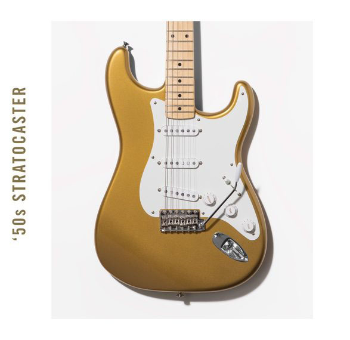
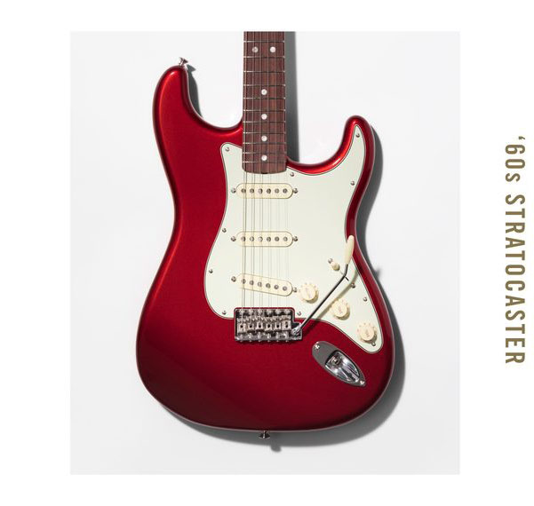
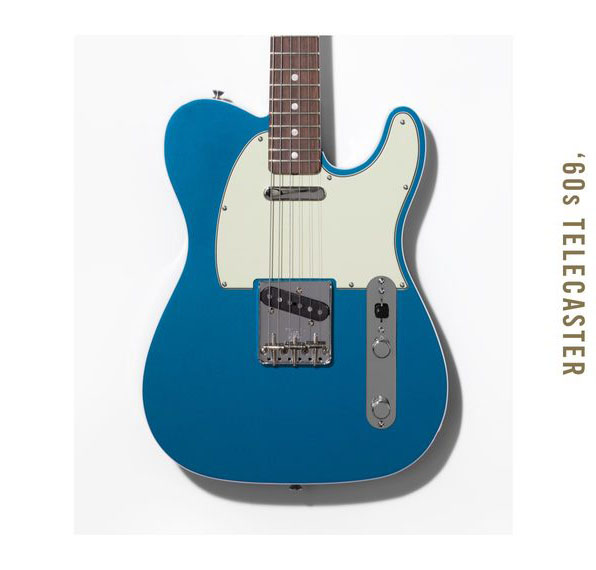

AMERICAN ORIGINAL '50S STRATOCASTER
American Original '50s Stratocaster® When we released the Stratocaster in 1954, its iconic style, articulate sound and plethora of innovations redefined electric guitar and opened up a brave new world of musical possibilities. The American Original ‘50s Stratocaster maintains Fender’s legendary original-era style and ground-breaking tone, while adding modern feel and pickup switching.
AMERICAN ORIGINAL '60S STRATOCASTER
American Original '60s Stratocaster® A period of change, both for Fender and for pop culture as a whole, the 1960s saw the Strat evolve slightly as it grew up. The white pickguard was updated to mint green, and the fingerboard was switched from the original maple to rosewood, adding a smoother note to the Strat’s clear, articulate voice. The American Original ‘60s Stratocaster keeps these refinements intact while adding modern feel and pickup switching to the iconic instrument that helped birth guitar rock as we know it.
AMERICAN ORIGINAL '50S TELECASTER
American Original '60s Stratocaster®
The ultimate blue-collar guitar, the Telecaster launched a musical revolution when we released it. Quickly adopted by working guitarists who were enamored with its trend-setting sound, feel and unique style, the Telecaster laid the foundation for modern country, blues and even heavy metal. The American Original ‘50s Telecaster has all of the authentic Fender touches that made the Telecaster a star of the studio and stage, adding modern feel and pickup switching to this classic guitar.
AMERICAN ORIGINAL '60S TELECASTER
American Original '60s Telecaster® The ultimate blue-collar guitar, the Telecaster launched a musical revolution when we released it. Quickly adopted by working guitarists who were enamored with its trend-setting sound, feel and unique style, the Telecaster laid the foundation for modern country, blues and even heavy metal. The American Original ‘50s Telecaster has all of the authentic Fender touches that made the Telecaster a star of the studio and stage, adding modern feel and pickup switching to this classic guitar.